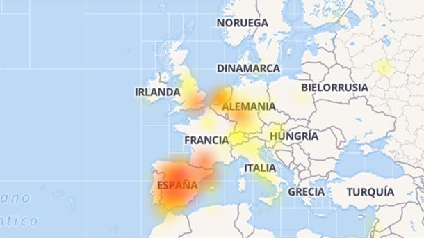

Lorem Whatsapp ha sufrido este martes una caída en varios puntos del Estado español, provocando el enfado de los usuarios afectados.
Según Downdetector, la caída del popular servicio de mensajería instantánea se ha comenzado a notar desde antes de las 07:00 horas. Hacia las 09:30 horas ha vuelto el servicio.
Las zonas más afectadas han sido Barcelona, Madrid, Sevilla y Valladolid, aunque los fallos se han repetido en otros puntos.
Usuarios del servicio de mensajería instantáneo han reportado que WhatsApp está caída desde temprano, tanto en el portal Downdetector como en redes sociales.
